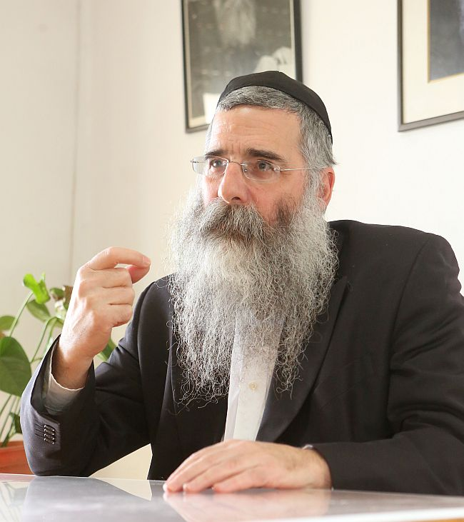

איך באמת מצליחים להתחבר בשנת תשע”ז לסיפור היסטורי עתיק שאירע לפני 3329 שנים? למה
איך באמת מצליחים להתחבר בשנת תשע”ז לסיפור היסטורי עתיק שאירע לפני 3329 שנים? למה משה רבינו דיבר עם פרעה בלשון הקודש בזמן שידע לדבר מצרית מהוקצעת? למה הרבי מה”מ מאמין בנו יותר ממה שאנו מאמינים בעצמנו? ואיך אפשר לחזק את חוויית ההתקשרות לרבי לכבוד יום הולדתו י”א בניסן? * שאלות אלו ועוד הפנינו אל הגאון
איך באמת מצליחים להתחבר בשנת תשע”ז לסיפור היסטורי עתיק שאירע לפני 3329 שנים? למה משה רבינו דיבר עם פרעה בלשון הקודש בזמן שידע לדבר מצרית מהוקצעת? למה הרבי מה”מ מאמין בנו יותר ממה שאנו מאמינים בעצמנו? ואיך אפשר לחזק את חוויית ההתקשרות לרבי לכבוד יום הולדתו י”א בניסן? * שאלות אלו ועוד הפנינו אל הגאון החסיד הרב ברוך קפלן, ר”מ ומשפיע בישיבת ‘מעיינות’ בירושלים, שמבקש לאורך הכתבה לרומם את הקוראים אל פסגות החוויה החסידית * ראיון במהות חג הפסח, ספוג ברגש של התקשרות

את השיחה פתחתי דווקא בעבודתו החינוכית של הרב קפלן בישיבת “מעיינות”.
“עצם העובדה שיהודי תלמיד חכם כמוך, יושב מדי יום עם בחורים צעירים, תושבי חו”ל, כשהפער ביניכם הוא כמה עשרות שנים, ובכל זאת אתה מתחבר אליהם, לומד איתם, משפיע עליהם חסידות ומעניק להם כוחות ואמונה - זה יתרון לשבחך”, אמרתי.
הרב ברוך קפלן צוחק את הצחוק הנעים שלו: “הרבי מלך המשיח היה קורא להם ‘מתחילים מאוחרים’”, הוא מציין בפני עובדה שלא הכרתי. “מדובר בחבר’ה צעירים אמריקאים שמגיעים לארץ ישראל כדי להכיר את יהדותם וללמוד איתם יהדות וחסידות. למעשה, אנחנו עושים גיוס תלמידים בחו”ל בשיתוף פעולה עם שלוחים הפועלים בקמפוסים השונים”.
למה בעצם שיבואו ללמוד דווקא בארץ ישראל?
“אנשים מחפשים משהו רוחני, משהו באידישקייט. הם יודעים שמה שהם יודעים, זו לא כל התמונה. קח לדוגמה בחור ישראלי, מה הוא עושה אחרי הצבא? הוא נוסע למזרח הרחוק. מה יש לו שם? הוא יודע שיש שם משהו יותר ממה שהוא חווה כאן. כך גם הבחורים האמריקאים, מגיעים לארץ ישראל כדי ללמוד. זה בחורים שיש להם ‘ברייטקייט’; הם לא מפחדים משינוי והם פתוחים מספיק כדי לרצות לבדוק.
לכל אדם יש תבנית מסגרת כלשהי ביהדותו. איך אתה מחליט מה המקום שלך בכל המסגרת המסורתית הזאת? כמעט תמיד זו אותה תבנית שאבא ואמא שלך נמצאים בה. הצעירים מעתיקים את התבנית שלתוכה גדלו מבלי לשאול או לחקור יותר מדי והם ממשיכים אותה הלאה. ואילו אנחנו מעודדים אותם להיות עצמאיים ולפתח את הזהות שלהם מתוך השקפת עולמם ולא רק העתק–הדבק.
רבים מהצעירים הללו מתוודעים לחב”ד בבית חב”ד של הקמפוס. אם הם הגיעו לשם, זה סימן שיש משהו בלבם שכבר גרם להם להיכנס לבית חב”ד. לכל אחד יש נפש אלוקית והוא מחפשים ‘משהו’. אנחנו ליובאוויטש, ואנחנו אוהבים יהודים ורוצים לקרב אותם. לפעמים אנחנו עובדים כל כך הרבה על הנפש הבהמית, ושוכחים שיש להם נפש אלוקית. הם רוצים אלוקים, הם רוצים רבי”.
הם יודעים שהם רוצים אלוקים? שהם רוצים רבי? אם כן, הרי זה ברמה פנימית עמוקה?
“בהחלט כך, למרות שרובם לא יודעים אפילו שיש דבר כזה שנקרא נפש אלוקית”.
הרב ברוך קפלן ניחן בכושר הסברה בהיר, והוא יודע לנתח מצבים ולתת דוגמאות ראויות מתוך החיים, והוא משתמש בכלים הללו במהלך השיחה עמו: “ראה, פה בארץ ישראל, עם כל התלונות שיש לאנשים על היהדות, הם עדיין מאד יהודים בנפשם. איך אני יודע את זה? תראה מה הם עושים כשהם מגיעים לחו”ל? מה הם מחפשים? הם מיד מחפשים מקום יהודי לבקר בו ולהרגיש מחוברים. צעיר אמריקאי שמטייל בעולם, לא מגיע למקום ומחפש סממנים אמריקאים…
עלינו לעורר אצלם התעניינות ולגרום להם לשאול שאלות. לבחור את מסגרת היהדות שלהם מתוך דעה אישית שלהם שתגובש בעקבות בדיקה.
התפקיד שלנו זה להביא אותם אל הנפש האלוקית שלהם על ידי הכרה והתבוננות שכלית. כשההכרה מגיעה מהשכל, הכל הופך להיות קל יותר”.
כיוון שאנחנו עומדים סמוך לערב פסח, אציג את השאלה כך: כשאתה בא ואומר לצעיר יהודי אמריקאי שלא גדל עם שום ידע יהודי, שעם ישראל נולד בחג הפסח לפני 3329 שנים, ומאז אנחנו מציינים את חג הפסח. איך אתה מחבר אותם למקום כל כך היסטורי?
“כשאתה שואל את השאלה הזאת, אני נזכר באירוע בו הלכתי למבצע פורים יחד עם חברי ר’ מאיר זקס. זה שנים שאנחנו הולכים למבצעים ב’פורים דפרזות’ ומבקרים בבתיהן של אלמנות צה”ל ונפגעי טרור. פעם שאלה אותי אחת הנשים: למה אני צריכה להאמין שיש הבדל בין יהודים ללא יהודים. מה השוני בינינו לבינם?
אמרתי לה תשובה שלא התיישבה על לבה, ואז ר’ מאיר אמר לה משהו מאד פשוט ובסיסי: תראי, אנחנו ילדים של אברהם יצחק ויעקב, שרה רבקה רחל ולאה. אברהם ושרה התחילו דרך חדשה בעולם הזה, דרך של העם היהודי. כיוון שאנחנו הילדים שלהם, יש לנו את הזכות להיות ממשיכי הדרך שלהם ושל הדרך שהם חידשו בעולם.
התשובה, ככל שהיא פשוטה, התקבלה על דעתה יותר מכל הסבר רעיוני אחר. כי יהודי קשור ומחובר לשורשים שלו מצד עצם הנשמה. כשמעוררים ומדברים על זה, זה פועל תזוזה בראש וברגש הלב. זה מזיז משהו בנפש.
כך גם החיבור של צעירים בני ימינו לחג הפסח הראשון, צריך לבוא ממקום של עמוק של חיבור נשמתי, לדעת שאנחנו ההמשך של עם ישראל שיצא ממצרים, ואנחנו חלק מהעניין עצמו”.
מהקולג’ ללימוד חסידות
דמותו של הרב קפלן מסקרנת. מרתק להקשיב להסברים המעמיקים שלו, לחוות את הבעות פניו כשהוא יורד לרזולוציות דקות של מונחים בחסידות או ניואנסים ב’התקשרות’.
הרב קפלן עצמו נולד וגדל בבית שאינו שומר מצוות בוונקובר שבקנדה. אחיו ר’ טוביה הגיע בצעירותו לארץ ישראל והתקרב ליהדות. בעקבותיו הגיע גם אחיו, ברוך, ובמשך שנה למד באוניברסיטה העברית “רק כדי להעביר את הזמן”. באחד הימים נכנס לישיבה לבעלי תשובה בשכונת קרית משה, הציץ ונפגע, ומאז החל להתקרב ליהדות.
לאחר שנה נוספת בוונקובר שבה סיים את הקולג’, שב לארץ ישראל ונכנס אף הוא ללמוד בישיבה שבה למד אחיו, שם הכיר מקרוב את ראש הישיבה הרב חיים ברובנדר. למרות שהישיבה לא הייתה חסידית, לימד ראש הישיבה חסידות בימי שישי בבוקר. ברוך קפלן נהנה מהעומק בשיעורים כמו גם מטעמם המתוק, ובסיוע השלוחים בוונקובר, הרב יעקב פליג והרב יצחק וויינברג, החל להתקרב לחב”ד.
הרב קפלן אף זכה להשתתף בשתי התוועדויות של הרבי, בי’ שבט תשד”מ ובי”א ניסן תשמ”ה. התוועדויות אלו הותירו בו חותם עז. “זה היה המכה בפטיש שלי”, הוא אומר בערגה. “כשרואים את הרבי מקרוב ואת הנהגתו, זה נתן לי את כל הכוח להתקדם הלאה”. לחתונתו כבר זכה לקבל מכתב הברכה של הרבי.
בהמשך החל ללמד בעצמו בישיבתו הליטאית של הרב חיים ברובנדר, אך בעקבות המחלוקת הגדולה שפרצה בשנת תשמ”ט, בה נרדפו בחורים בעלי זיקה חסידית שלמדו בישיבות “אור שמח” ו”אש התורה” הליטאיות, החליטו מספר חסידים דוברי אנגלית לפתוח בארץ ישראל מסגרת ישיבתית לבעלי תשובה דוברי אנגלית. מי שעמד מאחורי היוזמה, היה הרב מרדכי שטרן, רב קהילת חב”ד בהר נוף, וכן הרב משה מילר (כיום בשיקגו) והרב ברוך קפלן. לאחר שזכו לקבל הסכמה וברכה מהרבי (“שיהיה בהצלחה, אזכיר על הציון”), הם יצאו לדרך.
כך יצאה לדרך “ישיבת תורת חיים חב”ד”, ישיבה שעמדה על רגליה עד שנת תשנ”ה. בעקבות קשיים כלכליים נסגרה הישיבה ושנה לאחר מכן נפתחה ישיבת מעיינות, בה המשיך הרב קפלן להרביץ תורה וחסידות בתפקידו כמשפיע. “מדובר בחבר’ה אינטליגנטים, בוגרי קולג’ים שרוצים לדעת יותר על יהדות”.
כמו אבא אוהב, הרב קפלן מקבל את הבחורים בזרועות פתוחות ומעניק להם הרבה אהבה ושמחה. “לפחות פעם ביום בחור מגיע אלי ואומר לי ‘אני צריך חיבוק’”.
מאיפה מגיע הרצון הזה לחיבוק?
“כולנו רוצים חיבוק”, משיב הרב קפלן מיניה וביה. “כולנו רוצים עידוד. אבל התלמידים אצלנו מגיעים מרחוק, והם עוברים תהליך לא פשוט, אפילו קשה. הם בתחילת דרכם ויש להם כל כך הרבה ללמוד, להספיק ולעשות. בשלבים מסוימים נכנסת לראש מחשבת ייאוש - ‘איך אצליח ללמוד את כל זה?!’ אל תשכח שבעלי התשובה בחו”ל מתחילים ממש מאפס. זה לא כמו יהודי מישראל שמחליט להתקרב ליהדות ויש לו כבר את השפה ואת הכלים הראשונים להבין את הטקסטים. הצעירים מגיעים אלינו כשהם לא יודעים מילה בלשון הקודש. קודם כל הם שוברים את השיניים על הטקסט, וזה עוד לפני הבנת הפשט עצמו.
ועם זאת, אני מצדיע להם, כי הם מגיעים להישגים נפלאים. אחרי שנה או שנה וחצי בלבד, הם כבר מסוגלים ללמוד לבד גמרא עם רש”י. אם נשתמש בדימוי של הימים האלה, הם ממש עוברים יציאת מצרים וקריעת ים סוף גם יחד…
רק היום קיבלתי הודעת וואטסאפ מאחד הבחורים בישיבה שגופו עוד רווי קעקועים: ‘ראביי, רציתי לשתף אותך שאתמול בלילה היה לי משעמם. הלכתי לכותל המערבי וראיתי שם גמרא פסחים. אז פשוט פתחתי והתחלתי ללמוד בה. איזו מתנה קיבלתי’…
ביום ראשון הקרוב יתקיים ב–770 חתונה של תלמיד שלמד אצלנו שנתיים, בעוד הכלה למדה במסגרת המקבילה במשך שנה. הם נפגשו והם מקימים כעת בית חסידי בס”ד.
צריך להאמין בכוחות שניתנו לנו
אני מבקש לחזור לעניני השעה, יציאת מצרים וחג הפסח.
איך עושים את הגשר הזה בין יציאת מצרים הראשונה לימינו?
יש סיפור על רבי לוי יצחק מברדיטשוב, שפעם, כשסיים את ‘סדר’ פסח שלו מתוך התלהבות רבה ועצומה כדרכו, ישב בחדרו מלא שמחה על שזכה לעשות את ה’סדר’ כהלכתו ודקדוקו. לפתע שמע קול משמים שאומר לו שה’סדר’ של חיים שואב המים היה טוב מליל הסדר שלך…
ניגש הצדיק לביתו של חיים שואב המים והתעניין אצלו כיצד ערך את ה’סדר’ שלו. בתחילה מיאן לספר, אך כשהצדיק דחק בו, נאנח ואמר: “רבי! אומר לך את האמת. שמעתי שאסור לשתות יי”ש בכל שמונת ימי החג, לכן הקדמתי ושתיתי אתמול עם שחר עבור כל שמונת הימים. בעקבות כך נרדמתי על מקומי. לפתע הקיצה אותי אשתי משנתי, וטענה לעברי מדוע איני עורך את ה’סדר’ ככל אחינו היהודים? ‘מה את רוצה ממני’, עניתי לה, ‘אני עם הארץ וגם אבי היה עם הארץ; אין לי מושג מה צריך לעשות ומה לאסור לעשות. אך זאת לבטח אני יודע, שאבותנו ואמותנו היו שבויים בידי הצוענים, ויש לנו א–ל שהוציאנו לחרות… ראי נא, הנה שוב אנו שבויים, ואני אומר לך אין בידי ספק, הקדוש ברוך הוא יוציא גם אותנו מהגלות הזאת לחרות’. כשסיימתי כל זאת, אכלתי את המצות, שתיתי את היין וחזרתי לישון”.
נענה רבי לוי יצחק ואמר לו: “היטבת לספר הכי טוב את סיפור הגאולה”.
זו תשובה גם בנוגע לשאלתך, איך עושים את החיבור עם יציאת מצרים הראשונה. יציאת מצרים זה דבר אמיתי שחי וקיים גם היום; או–טו–טו גם אנחנו יוצאים מהמצרים שלנו. למרות שזה אולי נשמע למעלה מהשכל, אבל על ידי לימוד חסידות אנחנו פועלים כדי להביא את המשיח. זה הקשר שלנו עם יציאת מצרים בפועל.
מנגד, יש את העניין של יציאת מצרים ברמה הנפשית והרוחנית. אנחנו נמצאים במגבלות מסוימות שהן ה’מצרים’ שלנו, ועם זאת, יש לנו את הכוחות לצאת כל ההגבלות הללו ולהתחבר למשהו שהוא למעלה מכל עניין של גבול.
תוכל ‘להוריד’ את זה ברמה פשוטה יותר ליציאת מצרים נוסח תשע”ז?
במאמר “כי ישאלך בנך” (מלוקט חלק ד’) הרבי מבאר את ההבדל שבין המצוות לפני מתן תורה, לאחריה. והרבי אומר, שלפני מתן תורה היו משתמשים בדבר גשמי כאמצעי להגיע לעניין כפי שהוא ברוחניות. ואולם אחרי מתן תורה, החפץ הגשמי עצמו לא רק אמצעי, אלא הוא עצמו הופך לקדושה.
אם היינו שואלים, אפילו את קוראי “בית משיח”, מה פועלת המצווה? רבים מהם בוודאי היו אומרים: המצווה היא מעשה שעושים בעולם הזה ועל ידה מתחברים לקב”ה (מצווה מלשון צוותא).
נכון שאולי הדברים נשמעים כמו רעיון גבוה, אבל יש לנו מורה–דרך אחד, הרבי, שאומר לנו דברים מאד ברורים בקשר למה שאנחנו יכולים ומסוגלים לבצע. כל אחד מאתנו צריך להגיע למצב שבו הוא מאמין בעצמו ובכוחות שלו להביא את הגאולה האמיתית והשלמה. אתה מבקש ממני נוסחאות עממיות או קלילות כדי להקל על עצמנו את הגשמת הרעיונות. אבל באמת יש לנו משימה מכרעת שעליה צריכים לעבוד קצת ולהתייגע. אין לי ספק שקהל הקוראים מוכן להשקיע בזה את מיטב הכוחות שלו.
באחת משיחות קדשו שואל הרבי: למה משה רבינו דיבר עם פרעה בלשון הקודש ואהרן היה צריך לתרגם למצרית מדוברת? הרי ההיגיון אומר ההיפך: אהרן שגדל כל חייו בתוך הקהילה היהודית במצרים, מסתמא דיבר מצרית במבטא אידישאי עתיק, ודווקא משה רבינו שגדל בארמון המלכות ולמד שם לדבר מצרית מהוקצעת ומשובחת, הוא זה שהיה צריך לדבר עם פרעה?!
מסביר הרבי מה”מ - כי כדי לשבור את תוקף הקליפה היה משה צריך להעביר את המסר מהקב”ה, בדיוק כפי ששמע מפי הקב”ה. לעומתו, אהרן יכול להיות הממוצע שמתרגם את המסר עבור פרעה במילים שלו.
עלינו להיות לפני הכל קשורים למשה רבינו שבדורנו. להיות צמודים למה שכתוב במאמרים, בשיחות ובאגרות הקודש. אלו המסרים שמתאימים לדור שלנו. ובכל זאת, אנחנו גם צריכים להיות אהרן של עצמנו (אם אפשר להגדיר זאת כך), כל אחד צריך לתרגם את הענינים של הרבי ולהתאים אותם לפי כלי הנפש שלו; להוריד את הדברים שיהיו באופן שידברו אלי ויתנו לי את הכוח לחיות על פי זה. זו עבודה רצינית. לא אוכל לומר לעצמי תלמד מאמר מסוים או אגרת מסוימת וזה ישנה לי את החיים. צריך להוריד את דברי הרבי ולתרגם אותם ל’מצרים’ שלנו ולהביא לידי תוצאה.
מלאכת “התרגום” דורשת ידע. איך באמת נדע לתרגם נכון את הרעיונות מתורת החסידות כדי שיהיו לנו כלים להתמודד בחיי היום יום שלנו?
לפני כמה זמן התוועדתי עם בנות סמינר חב”דיות מחו”ל שלומדות בארה”ק. בין השאר שאלתי אותן: במשך כמה חודשים שהיתן כאן בסמינר, בכור ברזל של חסידות, עם התוועדויות ושבתונים. ספגתן כאן ממש ‘אש חסידית’. עוד כמה ימים אתן תשובנה לבית הוריכן לחג הפסח. מה אתן לוקחות אתכן מכאן לשם? איך תייבאו את ה’אש’ החסידית שקיבלת כאן, גם בבית ההורים? אז קיבלתי מהן תשובות שונות: לחזור על רעיונות חסידיים שלמדו, לסדר התוועדות י”א ניסן בשכונה או בעיר שלהן, וכן הלאה. כשסיימו אמרתי להן: כשבת חוזרת מכאן לבית הוריה, באופן אוטומטי היא נשאבת לאותו מקום בו הייתה בטרם עזבה את הביתה וחוזרת להיות הילדה של ההורים. כאן מתחיל המבחן האמיתי שלה, של כל אחת מכן.
כי מה באמת הקב”ה רוצה ממני בחיי היומיום שלי? הרבי נותן לנו מאמרים ושיחות, והם–הם הכוח שלנו לצאת מ’המצרים’ שלנו. התפקיד שלנו להביא את כוח החירות הזה לחיים היומיומיים; לחשוב מה באמת התפקיד שלי מחר, בשבוע הבא או בחודש הבא. על מה אני שם את הדגש בחיים שלי כעת. ועם זאת, הרבי רוצה שהראש שלנו יהיה באלוקות. אי אפשר להקל בזה.
את הנקודה הזאת העברתי לפני הבנות בסמינר - בטרם אתן חוזרות הביתה, עליכן להתכונן ולהיות במודעות המתאימה, מה הרבי רוצה ממני שאעשה, כיצד אני מביאה את הרעיון של הרבי לחיי היום יום הפשוטים שלי.
את הרעיון הזה אפשר להעביר גם כמסר חינוכי?
בהחלט שכן. הרבי מדבר הרבה על עניין של שמחה. איך מתרגמים את זה לפועל לעבודת ה’ שלנו? דבר ראשון לדעת ולזכור שאלוקות זה משהו יקר, מצוות זה משהו חביב ונעים.
במאמר “כי תשא” תשי”ז אומר הרבי “שמחו צדיקים בה’”. מה פירוש? הרי השמחה לא שייכת רק לצדיקים? אלא מדובר בשמחה שמגיעה מצד טעם ודעת של מי שמבין את החביבות הנעימה שיש בתורה ובמצוות, ומכך הוא בשמחה.
לא מזמן שמעתי נער צעיר שמדבר על קושי שיש לו בשמירת שבת. זה פשוט מעיק עליו. חשבתי לעצמי, אילו היה לו קשר לקב”ה מתוך אהבה ושמחה, הציווי האלוקי לא היה מעיק עליו והשבת לא הייתה כבדה לו. למה זה מכביד? כי אין לו שום יחס ושום עניין עם הקב”ה, ולכן המצוות מכבידות, והן עושות את החיים שלו קשים.
אולם אם נחנך את הדור הבא מתוך הבנה, שאדרבא, אנחנו זכינו בפרס של הלוטו בכך שקיבלנו את התורה, יש לנו את המצוות, את הרבי, חסידות, דור השביעי - זכינו להיות במקום הכי יקר והכי חביב שיש בעולם. אשרינו מה טוב חלקינו. באותה מידה היינו יכולים להיות פליטים בסוריה, או בכל מקום אחר על פני הגלובוס, שחיים חיים ללא משמעות. אבל הקב”ה זיכה אותנו שנולדנו לעם הנבחר, ואנחנו לא סתם יהודים, אלא חסידים. ולא סתם חסידים, אלא חסידים של הרבי. יש לנו אוצר.
אני חושב שזה התרגום הכי ריאלי לדור שלנו - קשר של אהבה עם אלקות ועם הרבי, ואז ממילא כל שאר הקשיים יתגמדו.
לימוד חסידות זה הדרך לחיבור
חודש ניסן הוא חודש שבו נגלה עליהם הקב”ה, זהו חודש שבו ליהודי יש עזרה ונתינת כוח מלמעלה. האם זה מספיק כדי שנוכל להתקדם במשימות הנפשיות שלנו?
חסידות חב”ד לא מוותרת לאדם, ואומרת שעליו להשתמש בכוחות שלו; שלא יחכה שמשמים יעשו בשבילו את העבודה.
אבל לפני שאנחנו משתמשים בכוחות שקיבלנו, עלינו להאמין שיש לנו את הכוחות האלה. הרבי מאמין בנו מאוד, אך למרבה הצער אנחנו לא מאמינים בעצמנו. הרבי יודע שיש לנו את הכוחות להביא את משיח צדקנו, ואנחנו מסוגלים להתמודד עם כל המטלות שלנו - עם הילדים ועם העבודה ועם שלל המשימות שיש לפתחנו - אבל כל זה באופן שאנחנו מחוברים לאלוקות. אם אנחנו מחוברים לאלוקות, ל’אין סוף’, הרי שנפתחות בפנינו כל האפשרויות כדי להצליח בכל המשימות שלנו.
איך מחברים את הראש לאלוקות?
רק דרך לימוד חסידות. לקבוע שיעור בחסידות, או לפתוח כל בוקר את היום בלימוד חסידות. החסידות היא המנוע שבכוחו להוציא אותנו ממצרים. כדי להיות מחובר לאלוקות, אני חייב לקבל כל יום את המסר האלוקי מפי הרבי דרך מאמרי החסידות שלו, עוד פעם ועוד פעם.
לדעת להשקיט את רעשי הרקע
אני זוכר שהרב יצחק דוד גרונר ע”ה, שליח הרבי באוסטרליה ביקר בירושלים לפני כארבעים שנה ובין השאר התוועד עם בחורים מישיבת מיר בבית כנסת חב”ד ‘בעל התניא’ בשכונת ‘מאה שערים’. אחד הבחורים שאל אותו: מי זה באמת הליובאוויטשער רבי? והרב גרונר ענה: הרבי שלי הוא אדון לעבדים. הוא מנהיג אותם.
מה הכוונה? מצד אחד הרבי עושה לנו חיים קשים, הרבי לא נותן לנו להתפשר על כלום. הוא רוצה את המקסימום. מצד שני, מה שהרבי נותן לנו לעשות, זה מתוק. עובדה שליובאוויטשער מסתובב תמיד עם חיוך ועם חיות. כך הרי מאפיינים את חסידי חב”ד: חסידים שמחים.
לפני ימים אחדים התפללתי שחרית במניין לא–חסידי. היה שם אב שהשגיח על בנו שהניח תפילין לראשונה בחייו. הסתכלתי על האבא וראיתי אותו רציני לגמרי. אפילו לא חיוך קטן של שמחה לכבוד הרגע הגדול. כשנגשתי לאחר מכן ואיחלתי לו ‘מזל טוב’, הוא הנהן בכיווץ פנים כאילו הוא עושה כעת משהו מכאיב ונורא.
זכינו שאנו חסידים, וחסיד הוא תמיד בשמחה, כי הוא מבין את הטוב ואת המתיקות שבכל עניין. הוא מכיר את האור שבכל מצווה.
אם כך, למה כל כך קשה לנו לחיות את זה ולבצע?
אינני יודע אם השתתפת פעם במשחק ספורט, אבל נהוג בקרב הקבוצות, שהן עורכות שני משחקים, פעם במגרש הביתי של זו ופעם משחק גומלין במגרש הביתי של רעותה. בכל פעם שקבוצה מארחת את רעותה, כל האוהדים של הקבוצה המארחת מתחילים להריע לקבוצה שלהם ולשרוק בוז לקבוצה המתארחת במטרה להפיל את רוחם ולבלבל אותם. כך למעשה, הקבוצה צריכה להתמודד לא רק מול שחקני הקבוצה שמולם, אלא גם מול הקהל שעושה הכל כדי להקשות עליהם להתרכז במשחק.
כך גם כאן בעולם הזה; אנחנו משחקים במגרש של העולם הזה, והרעש שאנחנו מקבלים כאן, זה מחיאות כפיים כשאנחנו עושים משהו לא טוב. וכשאנו מצליחים להתקרב לאלוקות, איננו שומעים שום עידוד. אם יש לך סמארטפון מהדגם המתקדם - פששש… כולם מתפעלים בקול רם. אבל אם למדת מאמר חדש - אה, נו…
אז איך מתמודדים מול קבוצה עם אוהדים שלה שמפריעים למשחק? הדבר הראשון שצריך לעשות, זה להפעיל כבר בתחילת המשחק לחץ ולהבקיע שער בקבוצה המארחת. כך נוצר מצב שבו הקבוצה המארחת והאוהדים שלה נכנסים ללחץ, בעוד הקבוצה האורחת מרגישה בטוחה ורגועה יותר.
כך גם בחיים שלנו - הכוח המדומה שיש בעולם הזה לעבירה, הוא חזק יותר. אבל אם “נבקיע שער” מיד בתחילת המשחק, בתחילת היום: נטילת ידיים ליד המיטה, ‘מודה אני’ בכוונה, ברכות מכל הלב, אז כבר אנו מתחילים לנטרל את הקולות הלא–טובים שמבקשים ללוות אותנו לאורך כל היום. ככל שאתרכז בדברים קדושים וטובים, כך נרחיב לאט לאט את ההצלחה האלוקית שלנו גם בשאר חלקי היום. אנחנו אמנם נמשיך להתמודד עם העולם הזה, אבל בלב קל יותר.
זה מה שהטעים הרב יצחק דוד גרונר ע”ה באותה התוועדות - הרבי הוא אדון לעבדים. הוא דואג שנעבוד קשה כדי לרומם אותנו; אבל יחד עם זה, הוא מעניק לנו את הכוחות הדרושים כדי שנצליח, אבל אנחנו מצדנו צריכים לצאת מהקופסה. כולנו נמצאים בתוך סוג של קופסה; זה אולי יכול להיות מקום נעים, אבל בכל זאת צריך לשאוף להגיע ממנו למקום יותר טוב, יותר אלוקי; כל אחד לפי העניין שלו.
זה המסר שלקחתי ממאמר ד”ה “ביום עשתי עשר תשל”א”: לכל אחד יש את הכוחות להתמודד עם המשימות שלפניו. כמובן שזה כרוך בתהליך, זה לוקח זמן. גם בפסח כשיש את היתרון של קפיצה ודילוג, בכל זאת אנחנו צריכים להשתמש בכוחות שקיבלנו. בלי זה, זה לא יילך.
כשאתה פותח בכל בוקר ספר חסידות של הרבי, עם כל הקשיים שבדרך זה נותן לך כוח להגיע לאהבה וליראה. זה מאפשר לך שמשיח יהפוך לחלק מהחיים שלך; זה גורם שיהיה לך אכפת מהגאולה ומכל שאר הדברים הטובים.
כך היא הדרך לחיות את הרבי
יום ההולדת של הרבי נמצא ממש בפתח. מה המשמעות של היום הזה לגבינו?
אני חושב שאי אפשר לקבוע משמעות אחת לכולם, שכן אצל כל אחד זה פועל אחרת, משום שלכל אחד יש קשר פרטי משלו עם הרבי.
ידוע מה שאמר פעם המשפיע ר’ מענדל פוטרפס: תודה רבה לקב”ה שנתת לי את הרבי ותודה רבי שנתת לי את הקב”ה. הרבי נותן לנו את האלוקות. אני חושב שזו כל התורה כולה, וכל השאר פירושים.
אז איך מגיעים למקום הזה של ‘לחיות את הרבי’?
כפי שאמרתי קודם, אי אפשר לחיות את הרבי בלי להתחיל ללמוד את התורה שלו. בלי זה אי אפשר להגיע לשום מקום אמיתי. אולם אם אני מקפיד ללמוד כל יום מתורתו של הרבי, הרי שהרבי מסתובב בראש שלי, המילים שלו מתנגנות לי במוח וכך אני אתחיל לחיות את הרבי למרות שאני נמצא בעולם הגשמי, ואז אדע שאני נמצא במקום הנכון והטוב שהרבי רומם אותי אליו.